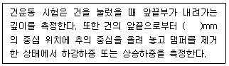
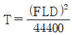
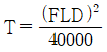
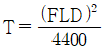
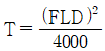
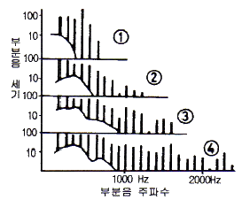
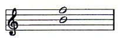

피아노조율산업기사 (2009-05-10 기출문제)
1과목: 임의 구분
1. 도료를 상도용 도료와 하도용 도료로 구분할 때 상도용 도료에 해당되지 않는 것은?
- 샌딩실러
- 래커
- 에나멜
- 우레탄
(정답률: 알수없음)

2. 피아노선 19번의 인장강도는 몇 N/mm2인가?
- 2310~2470
- 2280~2450
- 2240~2390
- 2200~2360
(정답률: 알수없음)
3. 1794년에 브로드우드가 제작한 피아노의 음역은?
- 5옥타브
- 6옥타브
- 7옥타브
- 8옥타브
(정답률: 알수없음)
4. 그랜드피아노에서 어떤 필요한 음만 울리게 하는 페달은?
- 댐퍼 페달
- 소프트 페달
- 소스테누토 페달
- 약음 페달
(정답률: 알수없음)
5. 다음은 건운동 시험 방법에 대한 내용이다. ( ) 안에 알맞은 수치는?

- 15
- 18
- 23
- 25
(정답률: 알수없음)
6. 피아노 향봉(Ribs)에 대한 설명으로 틀린 것은?
- 향판의 나무결 방향과 90° 정도가 되도록 접착한다.
- 향판과 같은 재질로 제작한다.
- 향판의 배불림 현상(Crown)을 유지하기 위하여 비중이 큰 소재를 사용한다.
- 향봉의 양끝을 깎는 것은 향판의 진동을 돕기 위한 것이다.
(정답률: 알수없음)
7. 피아노 발전과정에 대한 연도와 그 설명이 옳지 않은 것은?
- 1716년 : 마리우스, 4종의 피아노액션 발표
- 1773년 : 브로드우드, 즘페아 함께 피아노 제작 갯
- 18⑤년 : 에라르, 아그라프 발명
- 1862년 : 스타인웨이, 업라이트 피아노 제작
(정답률: 알수없음)
8. 피아노선의 비틀림특성 시험지 선지름이 0.70mm 이상 2.00mm 이하인 경우 비틀림 횟수는 최소 몇 회의 이상이어야 하는가?
- 10
- 15
- 20
- 25
(정답률: 알수없음)
9. 피아노 동선의 장력(T)을 구하는 식으로 옳은 것은? (단, L : 길이, D : 직경, F : 진동수를 나타낸다.)




(정답률: 알수없음)
10. 피아노선 번호 중 13번부터 19번까지 1/2번씩 증가할 때 굵기는 몇 mm씩 증가하는가?
- 0.025
- 0.⑤
- 0.1
- 0.2
(정답률: 알수없음)
11. 평균율 장3도, 장6도는 순정율에 비하여 어떠한가?
- 장3도는 14센트 넓고, 장6도는 16센트 넓다.
- 장3도는 14센트 좁고, 장6도는 16센트 넓다.
- 장3도는 14센트 넓고, 장6도는 16센트 좁다.
- 장3도는 14센트 좁고, 장6도는 16센트 좁다.
(정답률: 알수없음)
12. 팔꿈치나 손가락을 피아노 부분에 고정시키고 손목의 관절을 이용하여 조율하는 자세를 무엇이라 하는가?
- 니들링
- 파일링
- 레스트
- 치핑
(정답률: 알수없음)
13. A37이 220Hz 일 때 3도 아래 F33과의 맥놀이수(b/s)는 약 얼마인가? (단, F33의 주파수는 174.614Hz 이다.)
- 광음정 6.93
- 협음정 6.93
- 광음정 5.53
- 협음정 5.53
(정답률: 알수없음)
14. 조율검사를 할 때 사용되는 보족음정에 해당되는 것은?
- 5도와 단3도, 장6도와 4도, 장6도와 장3도
- 4도와 6도, 단3도와 5도, 단6도와 단3도
- 5도와 4도, 장6도와 장3도, 단6도와 단3도
- 4도와 5도, 단3도와 장6도, 장3도와 단6도
(정답률: 알수없음)
15. 순정음률에서 작은 온음에 해당하는 음정은?
- 도와 레
- 레와 미
- 파와 솔
- 라와 시
(정답률: 알수없음)
16. F33-C40 의 완전5도에 있어 맥놀이수(b/s)가 협음정 0.59 일 때 C40-F45 의 완전4도에 있어 맥놀이수(b/s)는 얼마인가?
- 협음정 1.18
- 광음정 1.18
- 협음정 0.59
- 광음정 0.59
(정답률: 알수없음)
17. 다음 중 단6도와 부합하는 배음은?
- 제5배음과 제3배음
- 제5배음과 제4배음
- 제6배음과 제5배음
- 제8배음과 제5배음
(정답률: 알수없음)
18. 순정5도의 음정 비율인 2:3을 차례로 12회 전개하여 옥타브에 모아서 만든 음계는 어떤 음률인가?
- 피타고라스음률
- 순정음률
- 중간음률
- 평균음률
(정답률: 알수없음)
19. A37 이 220Hz 일 때 5도 위의 E44와의 맥놀이수(b/s)는 약 얼마인가? (단, E44의 주파수는 329.63Hz 이다.)
- 0.44
- 0.54
- 0.64
- 0.74
(정답률: 알수없음)
20. 99c/s와 200c/s에서 들려오는 맥놀이수(b/s)는 얼마인가?
- 1
- 2
- 101
- 299
(정답률: 알수없음)
2과목: 임의 구분
21. 음정의 협화에 대한 설명으로 옳은 것은?
- 장2도, 단2도, 단7도는 불완전협화 음정이다.
- 단6도, 장6도는 불완전협화 음정이다.
- 단3도, 장3도는 불협화 음정이다.
- 완전4도, 완전5도는 불협화 음정이다.
(정답률: 알수없음)
22. 3화음(Triad)에 대하여 가장 옳게 설명한 것은?
- 근음으로부터 2도 위의 음과 4도 위의 음이 겹쳐서 생기는 화음
- 근음으로부터 2도 위의 음과 5도 위의 음이 겹쳐서 생기는 화음
- 근음으로부터 3도 위의 음과 4도 위의 음이 겹쳐서 생기는 화음
- 근음으로부터 3도 위의 음과 5도 위의 음이 겹쳐서 생기는 화음
(정답률: 알수없음)
23. 도플러 효과(doppler effect)에 대한 식을 옳게 나타낸 것은? (단, f′ : 도플러 효과 주파수, f : 원 주파수, v : 파속, vd : 관측자의 움직임, vs : 파원의 움직임을 나타낸다.)
- f′ = f - (v∓vd)vs
- f′ = f + (v∓vs)
- f′ = f × (vd∓vs)
- f′ = f + {(v∓vd)/(v∓vs)}
(정답률: 알수없음)
24. 그림은 G(98Hz)음의 음향 성분을 나타낸 것이다. 매우 강하게 타건했을 경우(ff)에 해당되는 것은?

- ①
- ②
- ③
- ④
(정답률: 알수없음)
25. 음속은 기온이 섭씨 1℃ 증가할 때 0.6m/s 증가한다. 실내온도가 섭씨 30℃ 일 때 무대에서 35m 떨어진 홀의 뒷자석까지 음이 도착하는데 걸리는 시간은 약 몇 초인가? (단, 섭씨 20℃에서 음속은 344m/s 이다.)
- 0.01
- 0.1
- 1
- 10
(정답률: 알수없음)
26. 그림은 어떤 음정을 나타낸 것인가?

- 증5도
- 완전5도
- 감5도
- 장5도
(정답률: 알수없음)
27. 음폐효과(masking effect)는 주로 음의 어떤 성질에 의해 일어나는가?
- 간섭
- 굴절
- 회절
- 공명
(정답률: 알수없음)
28. 음원에서 소리의 발생이 중지된 뒤에도 소리가 남아있는 현상을 무엇이라 하는가?
- 간섭
- 잔향
- 회절
- 흡수
(정답률: 알수없음)
29. 다음 중 정음작업과 관련하여 음색의 변화에 현저한 영향을 주는 조정작업이 아닌 것은?
- 렛오프 조정
- 잭 높이 전·후 조정
- 타현거리 조정
- 댐퍼 동작시기 조정
(정답률: 알수없음)
30. 그랜드 피아노의 정음작업시 경화제를 사용하는 경우가 있는데 이 때 경화제 사용시 주의사항으로 옳은 것은?
- 타현점에는 경화제 사용을 가급적 피한다.
- 경화제를 해머에 투여시 한 번에 소리를 만들어야 한다.
- 경화제는 강한 것을 여러 번 사용하는 것이 좋다.
- 음색이 좋지 않은 피아노로 바로 경화제를 사용한다.
(정답률: 알수없음)
31. 가운데 귀(중이) 내에 있는 청소골을 구성 요소가 아닌 것은?
- 망치뼈
- 등자뼈
- 모루뼈
- 고리뼈
(정답률: 알수없음)
32. 다음 음정의 진동비를 잘못 나타낸 것은?
- 완전5도 = 2 : 3
- 장3도 = 4 : 5
- 단6도 = 5 : 8
- 장6도 = 5 : 6
(정답률: 알수없음)
33. 음의 세기(intensity) 단위를 옳게 나타낸 것은?
- kg/m2
- erg/sec/cm2
- dyne/cm2
- N/m2
(정답률: 알수없음)
34. 음정에 대한 설명으로 옳지 않은 것은?
- 두 음 사이의 거리 관계를 음정이라 한다.
- 동시에 울리는 두 음의 관계를 화성스런 음정이라 한다.
- 2개의 같은 음을 1도라 부르고, 음 사이의 간격이 1자리씩 멀어짐에 따라 2도, 3도 등으로 부른다.
- 장7도에는 온음 4개, 반음 1개가 포함되어 있다.
(정답률: 알수없음)
35. 최고음부의 타현점은 현 길이의 어느 부분이 가장 적절한가?
- 1/8
- 1/9
- 1/10
- 1/16
(정답률: 알수없음)
36. 8도의 음정 사이에 2개의 반음과 5개의 온음이 포함된 음계를 무엇이라 하는가?
- 5음계
- 온음계
- 반음계
- 부분음계
(정답률: 알수없음)
37. 가운데 귀(중이) 내에 청소골을 통하여 진동력의 크기를 조절하며 효율이 좋도록 만들어져 음을 속귀(내이)에 전달하는 역할을 하는 것은?
- 고실
- 고막
- 달팽이관
- 귓구멍
(정답률: 알수없음)
38. 음악당 뒷 벽면에 흡음재질을 사용하는 주된 이유는?
- 반사음을 멀리 확산·증폭시키기 위하여
- 반사음을 어느 한 곳으로 집중시키기 위하여
- 음을 균일하게 반사시키기 위하여
- 에코(echo)를 방지하기 위하여
(정답률: 알수없음)
39. 복합음(complex sound)에 대하여 가장 옳게 설명한 것은?
- 주파수가 서로 다른 많은 순음이 합하여진 소리
- 한 개의 기본음과 그 정수배의 주파수를 갖는 배음에서 만들어지는 악음으로서 협화음이라고도 함
- 주파수가 같은 2개의 순음이 합하여진 소리
- 주파수가 다른 2개의 악음이 합하여진 소리로서 음의 3요소를 합한 소리
(정답률: 알수없음)
40. 현에 알맞도로 해머펠트에 탄력성을 주고 소리가 고르게 나도록 만들어 주기 위해 하는 작업은?
- 파일링
- 다림질
- 니들링
- 도우핑
(정답률: 알수없음)
3과목: 임의 구분
41. 그랜드피아노에서 잡음이 생길 수 있는 요인이 아닌 것은?
- 나비경첩의 핀이 헐거울 때
- 슈완다식 액션의 위펜 스프링이 빠져 있을 때
- 로스트 모숀이 있을 때
- 해머생크 로라우드의 접착이 떨어졌을 때
(정답률: 알수없음)
42. 후론트(front) 부싱 클로스 교환 후 후론트 핀에 꽉 끼지도 않았는데 건반동작이 둔한 주된 이유는?
- 아교가 너무 묽은 것을 사용했기 때문에
- 부싱 클로스가 너무 깊게 들어가 접착되었기 때문에
- 접착제가 너무 굳은 것을 사용했기 때문에
- 부싱 클로스가 너무 얕게 접착되어 있기 때문에
(정답률: 알수없음)
43. 그랜드피아노의 잭상하조정에 관한 설명으로 틀린 것은?
- 넉클스킨이 마모된 피아노의 잭상단은 레피티숀 레버 상면보다 0.3~0.4mm 정도 낮게 조정한다.
- 잭상단은 레피티숀 레버 상면보다 0.1~0.2mm 정도 낮게 조정한다.
- 슈완다식 액숀은 잭상하조정 스크류가 중앙에 있다.
- 스타인웨이식 액숀은 잭상하조정 스크류가 밑부분에 있다.
(정답률: 알수없음)
44. 해머헤드가 타현시 좌우로 심하게 흔들릴 때 조치해야 할 사항이 아닌 것은?
- 생크가 휘어 있으므로 바로 잡아 주어야 한다.
- 해머 생크 후렌지의 센터핀을 알맞게 교환해 준다.
- 부싱 클로스가 마모된 것은 교환해 준다.
- 후렌지 나사가 풀어진 것은 조여준다.
(정답률: 알수없음)
45. 그랜드피아노의 타현거리를 수정해야 한다. 함께 수정해 주어야 할 가장 중요한 부분은?
- 렛 오프
- 드롭거리
- 건반깊이
- 댐퍼스타트
(정답률: 알수없음)
46. 튜닝핀이 헐거울 때 가장 이상적인 수리 방법은?
- 기존 튜닝핀보다 작은 사이즈로 교체한다.
- 튜닝핀을 납작하게 하여 박는다.
- 기존 튜닝핀보다 오버사이즈로 교체한다.
- 튜닝핀을 휘어시 다시 박는다.
(정답률: 알수없음)
47. 소스테누토 페달 조정에 대한 설명으로 틀린 것은?
- 스타인웨이식 피아노의 소스테누토 페달은 액션에 붙은 것과 백레일에 붙어 있는 2가지가 있다.
- 댐퍼페달을 밟은 상태에서 소스테누토 페달을 밟은 다음 댐퍼페달을 놓으면 댐퍼는 밑으로 내려가야 한다.
- 건반을 누르고 소스테누토 페달을 밟으면 댐퍼가 내려가지 않아야 한다.
- 페달로드의 날은 페달을 밟았을 때 수평이 되도록 페달로드 헤드를 돌려 조정한다.
(정답률: 알수없음)
48. 전체 튜닝핀 수리 작업을 할 경우 주의해야 할 사항 중 옳은 것은?
- 튜닝핀은 현재 핀보다 2mm 정도 굵은 것을 사용한다.
- 튜닝핀을 풀 때는 저음 쪽부터 한 음씩 건너서 조금씩 푼 다음 전체적으로 풀어 나간다.
- 업라이트인 경우 프레샤바를 해체하고 작업하면 쉬우며 프레샤바의 높이와는 상관없다.
- 장현 후 조율은 1회 정도면 충분하다.
(정답률: 알수없음)
49. 오래 사용한 그랜드피아노에서 백첵스킨 한쪽 편의 마모를 수리하는 방법으로 가장 옳은 것은?
- 백첵스킨에 윤활유를 칠하여 약간 부풀게 한다.
- 백체스킨을 분해한 후 뒤집어 다시 붙인다.
- 백첵스킨을 샌드페이퍼로 곱게 갈아서 사용한다.
- 백첵스킨을 맞추어 해머우드를 교환해 준다.
(정답률: 알수없음)
50. 현을 교환할 때의 공정에 대한 설명으로 옳은 것은?
- 튜닝핀에 꽂힌 와이어의 한 쪽이 길게 나오도록 한다.
- 튜닝핀 끝에서 7.5cm 정도의 길이로 잘라 장현한다.
- 단선이 되어 현을 교환할 때에는 감는 회수는 상관없다.
- 불량선을 교환할 때에는 현 번호와는 관계가 없다.
(정답률: 알수없음)
51. 건반 후론트 부싱을 교환할 때의 유의사항으로 옳지 않은 것은?
- 부싱의 길이는 가로 9mm, 세로 3mm 정도가 좋다.
- 클로스는 항상 털이 긴 쪽을 핀과 마찰하는 상태로 접착한다.
- 접착 후 끼워두는 치구는 후론트 핀보다 3mm 정도 두꺼운 것을 사용한다.
- 낡은 클로스는 수증기를 이용해서 떼어낸다.
(정답률: 알수없음)
52. 갈라진 음향판의 수리 방버으로 가장 적절한 것은?
- 갈라진 부분에 종이를 알맞게 밀어 넣어 갈라진 부분이 보이지 않도록 한다.
- 갈라진 부분에 단단한 잡목을 깎아 접착제를 칠한 후 박아 준다.
- 갈라진 틈에 음향판과 동일한 재료를 깎아 접착제를 칠한 후 때워 준다.
- 갈라진 부분에 접착제를 칠하여 둔다.
(정답률: 알수없음)
53. 다음 중 2중 터치의 발생요인이 아닌 것은?
- 건반 깊이가 너무 얕을 때
- 백첵 높이가 너무 낮을 때
- 해머가 너무 가벼울 때
- 레피티션 스프링이 너무 강할 때
(정답률: 알수없음)
54. 그랜드피아노의 타현거리 조정 방법으로 옳은 것은?
- 액션을 떼어내어 작업대에 올려놓고 견본에 맞추어 나머지를 조절한다.
- 액션을 피아노 본체에 끼우고 레규레이팅 버튼을 돌려 맞춘다.
- 액션을 피아노 본체에서 빼내어 드롭 나사를 돌려 맞춘다.
- 액션을 떼어내어 레규레이팅 버튼을 돌려 맞춘다.
(정답률: 알수없음)
55. 강선 교환 후 현을 롤러로 미는 주된 이유는?
- 보기 좋고 곱게 정리하기 위해서
- 선을 부드럽게 하기 위해서
- 조율 후 피치를 안정시키기 위해서
- 선을 똑바로 펴기 위해서
(정답률: 알수없음)
56. 그랜드피아노에세 캡스턴 조정을 맞춘 후 건반을 타건 했을 때 해머가 고르지 못하고 높거나 낮았다. 그 주된 이유로 옳은 것은?
- 건반고르기 불량
- 드롭조정 불량
- 잭상하조정 불량
- 해머접근 불량
(정답률: 알수없음)
57. 그랜드피아노의 키를 타현하고 소스테누토 페달을 밟았으나 댐퍼가 떨어져 버리고 음이 울리지 않는다. 이것의 가장 적절한 수리방법은?
- 페달봉 머리의 나사를 돌려서 올려준다.
- 페달레버와 소스테누토 로드 사이에 있는 리프팅 로드의 길이를 짧게 잘라준다.
- 소스테누토 로드의 위치를 확인하고 바로 잡는다.
- 열쇠대를 풀고 액션의 위치가 제자리에 있는지를 확인한다.
(정답률: 알수없음)
58. 그랜드피아노의 타현거리가 조정된 후에는 해머레일의 거리를 조정해야 하는데 그 조정방법으로 옳은 것은?
- 해머가 정지된 상태에서 생크가 해머레일 밑에 밀착되어야 한다.
- 해머가 정지된 상태에서 생크와 해머레일의 간격을 2~3mm 정도 두어야 한다.
- 해머가 정지된 상태에서 생크와 해머레일의 간격을 5~6mm 정도 두어야 한다.
- 해머가 정지된 상태에서 생크와 해머레일의 간격을 8~10mm 정도 두어야 한다.
(정답률: 알수없음)
59. 조율핀이 회전할 때 점핑(튀는 것)하는 것을 방지하기 위한 방법으로 옳은 것은?
- 핀을 빼고 구멍에 물을 칠한다.
- 핀을 빼고 구멍에 기름을 칠한다.
- 핀을 빼고 핀에 분필을 칠한다.
- 핀을 빼고 줄로 연마한다.
(정답률: 알수없음)
60. 그랜드피아노의 캡스턴 스크류 조정에 대한 설명으로 옳은 것은?
- 캡스턴 스크류와 위펜힐 사이의 간격을 0.5mm로 조정한다.
- 캡스턴 스크류와 위펜힐 사이의 간격을 1mm로 조정한다.
- 캡스턴 스크류와 위펜힐 사이의 간격을 3mm로 조정한다.
- 캡스턴 스크류와 위펜힐 사이는 간격이 없도록 조정한다.
(정답률: 알수없음)